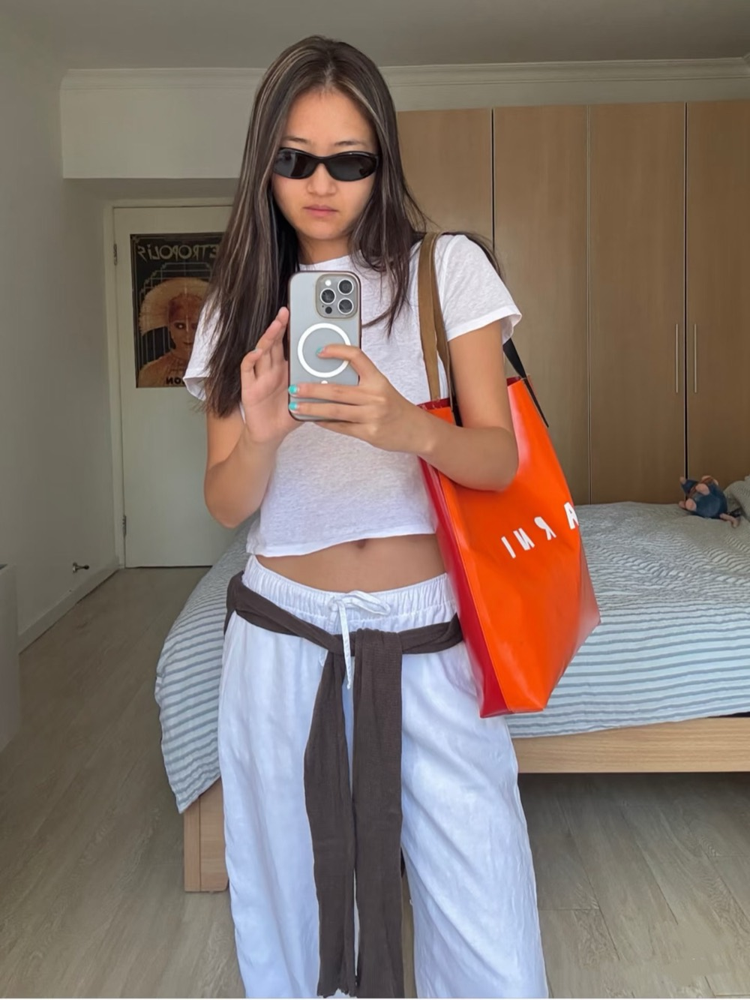
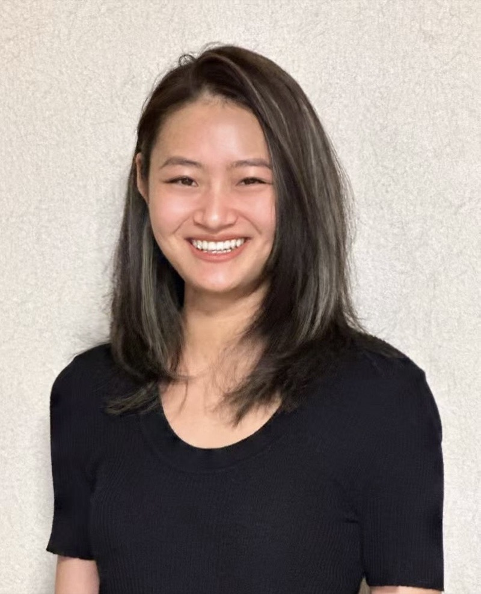

Zoe Xu — stylist & writer, Shanghai
I dress the way I write — layer, cut, move the comma until it sounds right.
Six thousand readers on RedNote and more than twenty brand collaborations on one side of the desk. Cannes, Berlin and the London Film Festival on the other. Both are the same work: deciding what goes next to what.

orange tote
Words — poems & prose
“What fascinates me is creating layers with different shades of green — a sage trench coat, an olive green shirt, a tea green bag.” From 4 Doses of Style Inspo from Fall 2024 RTW
After two years of writing about other people's films, Zoe is turning the work back on the sentence itself. Reviewing hands you an argument; a poem hands you the line break, the rhythm, the question of which verb to use. She writes in English, her second language, exploring identity, memory and emotion. Poems and nonfiction prose are being written now and published as they are finished — here, on Substack, and gradually gathered into a collection.
Until then, the film writing stays where it is: festival reports and reviews for
UK China Film Club in London, personal essays at Zoe's Collage. The first
Substack piece was on Justine Triet's Anatomy of a Fall and Yiyun Li's
Where Reasons End, back in 2023, and the habit never left.
Subscribe to Zoe's Collage
Writing
Poem & essaysAn Aubade
“The white ceiling/is all I have, I stare at it,/trying to pin/you onto it,/like Jesus on the cross.” A dawn poem: a night spent in silence, and the leaving that follows it.
Read the poem →How to survive Cannes and its disappointments
“Every May, Cannes becomes a temple for cinema, a place where cinephiles and the whole film industry come to worship.” Every title a world premiere, judged on a poster and a synopsis; four films a day from half past eight in the morning until one at night, on three espressos and an energy drink. A ranking that quietly parts ways with the jury's.
Read the report →It's Time to Talk About Sean Baker
Eight features in twenty-four years; a donut-shop quarrel between eight characters shot on three iPhone 5s; two little girls running toward a theme park in the last shot of The Florida Project. “Sean Baker always ends the film somewhere beyond your prediction — surprising, blunt, yet riveting.”
Read the essay →The Testament of Ann Lee
A sacred elegy for a strong-willed, devout female leader — Manchester, 1758, and a woman who becomes Mother Ann. After the storm, on deck: “a powerful and sacred dance… in the stillness of a post-storm morning hits hard with strong emotional force.” The film peaks there.
Read the review →4 Doses of Style Inspo from Fall 2024 RTW
A whole spectrum of green — seaweed to olive to sage — swept the Fall 2024 runways at Saint Laurent, Isabel Marant, Bottega Veneta and Loewe, and then swept her own wardrobe. On the slit skirt, the flat cap, the half-moon bag, and one small hope: “Hope there will be spring in London.”
Read on Substack →Style
LookbookThe styling started in junior high, recreating Hollywood looks found on the Chinese internet. The first brand wrote at three hundred followers.
More than twenty collaborations later, the method has not changed much: take one sent piece, put it against something that shouldn't work, keep the palette narrow and let a single object — a red flat, an orange tote, a pink net bag — do the arguing. New looks go up on RedNote first.
About
Zoe Xu
Zoe Xu is a stylist and writer living in Shanghai, by way of London.
She has an MA in Film from Goldsmiths and an earlier MA in Management. Since 2024 she has written reviews, industry pieces and festival reports for UK China Film Club — Berlin, Cannes, London — and interviewed actors and filmmakers for the same masthead. Her Substack, Zoe's Collage, has run since 2023.
The styling runs alongside it and points somewhere specific: consultancy first, then a shop, then a label of her own. Enquiries for styling consultation and brand collaboration are welcome.
Zoe's Collage
New poems, prose and film writing, sent when they are ready.
No schedule, no filler — one letter at a time from Shanghai.
Subscribe on Substack